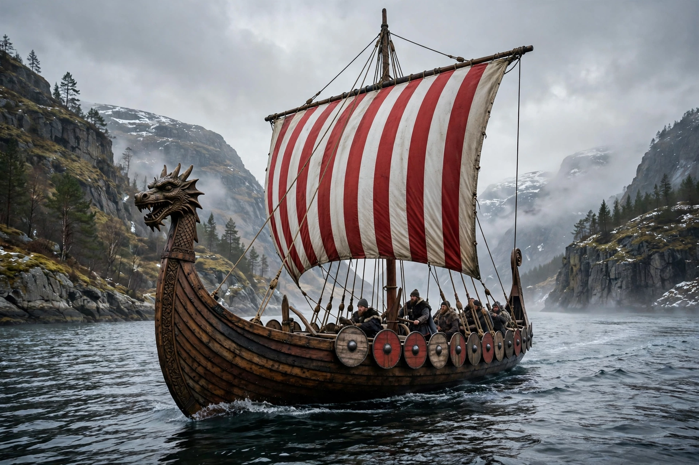

From Wikipedia, the free encyclopedia
| Norse people | |
| Regions | Scandinavia (Norway, Denmark, Sweden); later Iceland, Greenland, Normandy, the British Isles, Kievan Rus' |
|---|---|
| Languages | Old Norse and its dialects |
| Religion | Old Norse religion; later Christianity |
| Period | c. 8th–15th centuries (Viking Age c. 793–1066) |
The Norse people were a North Germanic ethnolinguistic group of the Early Middle Ages, native to Scandinavia and speakers of Old Norse. During the Viking Age (c. 793–1066), Norse seafarers — traders, raiders, explorers, and settlers — travelled widely across the North Atlantic, Europe, and beyond, reaching Iceland, Greenland, and North America in the west, and Constantinople and the Caspian Sea in the east and south.

"Norse" refers to the medieval inhabitants of Scandinavia and their language; the word derives from noord, "north." Not all Norse people were Vikings: víkingr described a person who went on expeditions overseas, while the wider population consisted largely of farmers, fishers, craftspeople, and merchants. Contemporary sources in England and Francia often called the raiders "Danes" or "pagans," while in the east Norse traders and mercenaries were known as Varangians and Rus'.
Norse society was organised around kinship groups and ranked from enslaved people (thralls) through free farmers (karls) to chieftains and earls (jarls) and kings. Local and regional assemblies called things settled disputes and made law. The Norse wrote in runes, carved elaborate wood and stone, and preserved a rich oral tradition of sagas, skaldic poetry, and myth — the stories of Odin, Thor, and the Norse pantheon later written down in the Icelandic Eddas.
Norse settlement transformed the North Atlantic and parts of mainland Europe. Norwegians colonised Iceland and Greenland and reached Newfoundland around the year 1000. Danish Vikings conquered much of England (the Danelaw), while in 911 the West Frankish king granted the Seine valley to Rollo, founding what became the Duchy of Normandy. Swedish Norse travelled the rivers of Eastern Europe, trading with Byzantium and the Abbasid Caliphate.
Between the 10th and 12th centuries the Norse kingdoms adopted Christianity, ending the Viking Age and integrating Scandinavia into Latin Christendom. Norse influence survives in place names, language (many English words are Old Norse loans), law, and the cultures of Iceland, the Faroes, Orkney, and Shetland.
See also: Duchy of Normandy · Vikings · Old Norse · Varangians · Iceland